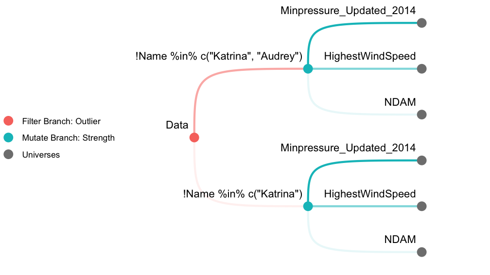
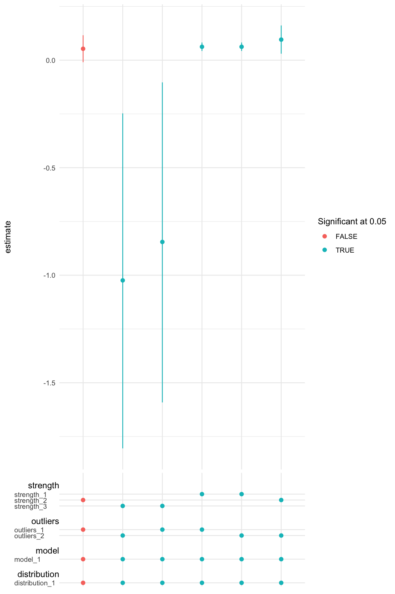

mverse is an extension to multiverse package (Sarma et al. 2021) which allows users create explorable multiverse analysis (Steegen et al. 2016) in R. This extension provides user friendly abstraction and a set of examples for researchers, educators, and students in statistics.
Installation
You can install the released version of mverse from CRAN with:
install.packages("mverse")You can install the development version from GitHub with:
# install.packages("devtools")
devtools::install_github("mverseanalysis/mverse", build_vignettes = TRUE)Usage
The following demonstration performs a multiverse analysis using hurricane dataset (Jung et al. 2014) included in the library. We first create 6 universes as described in Figure 1. A filter branch with 2 options and a mutate branch with 3 options results in 6 universes in total. We then fit a Poisson regression model across the multiverse and inspect a coefficient estimate. See vignette("hurricane") for a detailed analysis as well as the terminologies used.

Initiate
First, we start by loading the library and defining a mverse object with the dataset of interest.
Define Branches
We use the *_branch() methods to define branches. filter_branch() defines filtering operations using dplyr::filter() with different options for the filter.
outliers <- filter_branch(
! Name %in% c("Katrina"),
! Name %in% c("Katrina", "Audrey")
)mutate_branch() multiplexes dplyr::mutate() to add a new column in the dataset.
strength <- mutate_branch(
NDAM, HighestWindSpeed, Minpressure_Updated_2014)In order to fit a Poisson regression, we need to specify the model using R’s formula syntax and the underlying distribution using family. In mverse, we provide the specifications using formula_branch() and family_branch(). In this demonstration, we only define a single option for both formula and family but it is possible to provide multiple options for them as well.
model <- formula_branch(alldeaths ~ strength * MasFem)
distribution <- family_branch(poisson)Add Branches
After defining the branches, we can add the branch objects to the mverse object using add_*_branch() methods.
mv <- mv %>%
add_filter_branch(outliers) %>%
add_mutate_branch(strength) %>%
add_formula_branch(model) %>%
add_family_branch(distribution)Fit Model
glm_mverse() multiplexes stats::glm() function and fits a GLM in each universe according to the specifications provided by add_fomula_branch() and add_family_branch().
mv <- mv %>% glm_mverse()Extract Results
After completing the analysis, we can extract the results using summary(). The method returns a table with branching options, estimates, 95% confidence intervals for all regression terms across the multiverse.
res <- summary(mv)
res
#> # A tibble: 24 × 16
#> universe outliers_branch strength_branch model_branch distribution_branch
#> <fct> <fct> <fct> <fct> <fct>
#> 1 1 outliers_1 strength_1 model_1 distribution_1
#> 2 1 outliers_1 strength_1 model_1 distribution_1
#> 3 1 outliers_1 strength_1 model_1 distribution_1
#> 4 1 outliers_1 strength_1 model_1 distribution_1
#> 5 2 outliers_1 strength_2 model_1 distribution_1
#> 6 2 outliers_1 strength_2 model_1 distribution_1
#> 7 2 outliers_1 strength_2 model_1 distribution_1
#> 8 2 outliers_1 strength_2 model_1 distribution_1
#> 9 3 outliers_1 strength_3 model_1 distribution_1
#> 10 3 outliers_1 strength_3 model_1 distribution_1
#> # ℹ 14 more rows
#> # ℹ 11 more variables: term <chr>, estimate <dbl>, std.error <dbl>,
#> # statistic <dbl>, p.value <dbl>, conf.low <dbl>, conf.high <dbl>,
#> # outliers_branch_code <fct>, strength_branch_code <fct>,
#> # model_branch_code <fct>, distribution_branch_code <fct>The resulting data is a tibble object and we can use regular tidyverse grammar to manipulate the data. In the code below, we specifically focus on the estimated coefficient for MasFem and its confidence intervals.
library(dplyr)
res %>%
filter(term == "MasFem") %>%
select(outliers_branch, strength_branch, term, estimate, conf.low, conf.high)
#> # A tibble: 6 × 6
#> outliers_branch strength_branch term estimate conf.low conf.high
#> <fct> <fct> <chr> <dbl> <dbl> <dbl>
#> 1 outliers_1 strength_1 MasFem 0.0623 0.0427 0.0822
#> 2 outliers_1 strength_2 MasFem 0.0531 -0.00942 0.116
#> 3 outliers_1 strength_3 MasFem -0.845 -1.59 -0.103
#> 4 outliers_2 strength_1 MasFem 0.0623 0.0427 0.0822
#> 5 outliers_2 strength_2 MasFem 0.0956 0.0301 0.161
#> 6 outliers_2 strength_3 MasFem -1.02 -1.81 -0.247Plot a Specification Curve
We can also inspect the result graphically using spec_curve(). The method builds a specification curve (Simonsohn, Simmons, and Nelson 2020) for a term in the regression model specified by var. The method also allows multiple ways of sorting the estimates. See ?spec_curve for details.
spec_summary(mv, var = "MasFem") %>%
spec_curve(spec_matrix_spacing = 4) +
labs(colour = "Significant at 0.05")